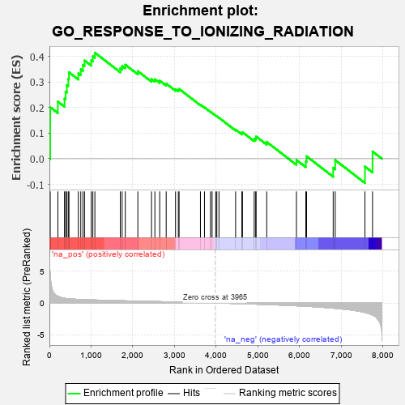
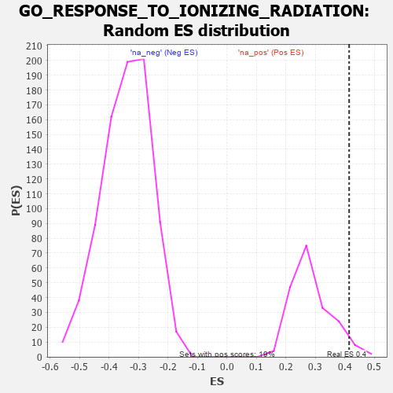

| | | Dataset | 7d |
| Phenotype | NoPhenotypeAvailable |
| Upregulated in class | na_pos |
| GeneSet | GO_RESPONSE_TO_IONIZING_RADIATION |
| Enrichment Score (ES) | 0.41514805 |
| Normalized Enrichment Score (NES) | 1.4425212 |
| Nominal p-value | 0.03626943 |
| FDR q-value | 0.31357083 |
| FWER p-Value | 1.0 |
Table: GSEA Results Summary

Fig 1: Enrichment plot: GO_RESPONSE_TO_IONIZING_RADIATION
Profile of the Running ES Score & Positions of GeneSet Members on the Rank Ordered List
| PROBE | GENE SYMBOL | GENE_TITLE | RANK IN GENE LIST | RANK METRIC SCORE | RUNNING ES | CORE ENRICHMENT | | 1 | H2AX | | | 20 | 4.738 | 0.2014 | Yes |
| 2 | SWI5 | | | 203 | 1.045 | 0.2235 | Yes |
| 3 | HUS1 | | | 362 | 0.735 | 0.2352 | Yes |
| 4 | BAX | | | 387 | 0.711 | 0.2627 | Yes |
| 5 | RAD9A | | | 418 | 0.681 | 0.2883 | Yes |
| 6 | ERCC1 | | | 453 | 0.660 | 0.3124 | Yes |
| 7 | WRN | | | 469 | 0.649 | 0.3385 | Yes |
| 8 | XRCC6 | | | 694 | 0.560 | 0.3343 | Yes |
| 9 | ELK1 | | | 752 | 0.545 | 0.3506 | Yes |
| 10 | BLM | | | 804 | 0.531 | 0.3670 | Yes |
| 11 | RFWD3 | | | 843 | 0.521 | 0.3846 | Yes |
| 12 | MEN1 | | | 1003 | 0.483 | 0.3854 | Yes |
| 13 | YAP1 | | | 1041 | 0.475 | 0.4012 | Yes |
| 14 | RAD51 | | | 1090 | 0.466 | 0.4151 | Yes |
| 15 | ERCC8 | | | 1699 | 0.357 | 0.3538 | No |
| 16 | MRNIP | | | 1743 | 0.346 | 0.3633 | No |
| 17 | MSH2 | | | 1819 | 0.334 | 0.3682 | No |
| 18 | INO80 | | | 2120 | 0.288 | 0.3427 | No |
| 19 | KDM1A | | | 2447 | 0.237 | 0.3118 | No |
| 20 | RAD1 | | | 2528 | 0.223 | 0.3113 | No |
| 21 | KAT5 | | | 2644 | 0.206 | 0.3057 | No |
| 22 | ATR | | | 2800 | 0.183 | 0.2940 | No |
| 23 | BRCA2 | | | 3024 | 0.146 | 0.2721 | No |
| 24 | TIGAR | | | 3091 | 0.138 | 0.2698 | No |
| 25 | GPX1 | | | 3109 | 0.135 | 0.2734 | No |
| 26 | CBL | | | 3621 | 0.056 | 0.2114 | No |
| 27 | HSF1 | | | 3718 | 0.039 | 0.2009 | No |
| 28 | LZIC | | | 3862 | 0.018 | 0.1836 | No |
| 29 | NIPBL | | | 3900 | 0.010 | 0.1794 | No |
| 30 | EYA1 | | | 3987 | -0.006 | 0.1688 | No |
| 31 | PARP1 | | | 4014 | -0.010 | 0.1660 | No |
| 32 | SFRP2 | | | 4065 | -0.018 | 0.1604 | No |
| 33 | ERCC6 | | | 4464 | -0.087 | 0.1140 | No |
| 34 | GATA3 | | | 4614 | -0.120 | 0.1004 | No |
| 35 | CLK2 | | | 4628 | -0.124 | 0.1041 | No |
| 36 | TLK2 | | | 4909 | -0.179 | 0.0764 | No |
| 37 | XRCC5 | | | 4946 | -0.187 | 0.0800 | No |
| 38 | PRKDC | | | 4955 | -0.189 | 0.0871 | No |
| 39 | ATM | | | 5210 | -0.249 | 0.0658 | No |
| 40 | STK11 | | | 5922 | -0.443 | -0.0049 | No |
| 41 | RNF8 | | | 6147 | -0.518 | -0.0108 | No |
| 42 | EGR1 | | | 6165 | -0.527 | 0.0097 | No |
| 43 | NET1 | | | 6803 | -0.816 | -0.0355 | No |
| 44 | AEN | | | 6852 | -0.842 | -0.0053 | No |
| 45 | XRRA1 | | | 7565 | -1.496 | -0.0308 | No |
| 46 | CASP3 | | | 7747 | -1.902 | 0.0283 | No |
Table: GSEA details [plain text format]

Fig 2: GO_RESPONSE_TO_IONIZING_RADIATION: Random ES distribution
Gene set null distribution of ES for GO_RESPONSE_TO_IONIZING_RADIATION